Chapter 8 Notes Part 1: Polynomials, Curve Fitting, and Interpolation.
Some Definitions
Polynomials
Mathematical expressions used in many engineering problems consisting of combinations of multiple orders of the dependent variable in a form such as
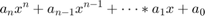
Curve Fitting or Regression Analysis
Process of finding a function that can be used to model data. Note that the model may not pass through any of the points in the original data. The resultant function only attempts to find a function which minimizes some error criteria.
Interpolating
Process of estimating the data value between points. The simplest kind is just a straight line between two points (Just like the plot command does).
This chapter discusses how we can use Matlab to perform analyses with polynomials, curve fitting, and interpolations
Contents
Polynomials
Given polyomials of the form:
We can define/state the following:
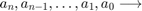 Define the coefficients of the polynomial.
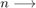 order of the polynomial.
In MATLAB, polynomials are represented by a row vector in which the elements are the coefficients
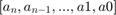
The first element is the coefficient of the x with the highest power. The vector has to include all the coefficients, including the ones that are equal to 0.
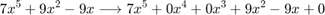
So in Matlab, we would specify the polynomial as
dataPoly = [7 0 0 9 9 0]
dataPoly =
7 0 0 9 9 0
We can evaluate the the value of a polynomial at a point, or a series of points, with the Matlab built-in function
polyval(p,x)
p is the coefficient vector as specified as dataPoly above
x is a single data point, a vector, or a matrix.
Let's look at a simple example:
% First let's define a input vector x = linspace(-3,3,100); y = polyval(dataPoly,x); plot(x,y) title('Polynomial Evaluation using polyval'); ylabel('y'); xlabel('x');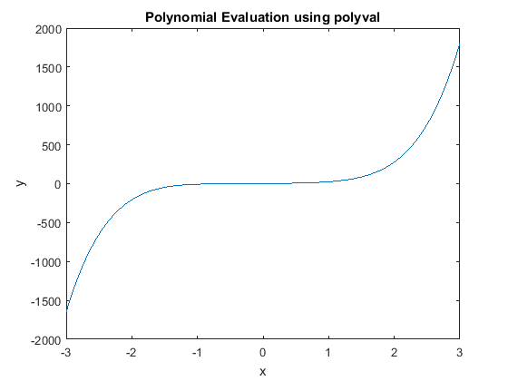
Roots of a Polynomial
Often times an engineering problem requires us to solve problems of the form
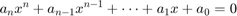
Where the goal of the problem is to solve for the values of x that make the equality true. These values of x are termed the roots of the equation. Matlab has a function, called roots(p) that determines the roots of a polynomial p. The form of the function is
r = roots(p)
p is a polynomial specified as declared above.
r is a vector of the corresponding roots of the polynomial (they may be real or complex). For example:
% Let's specify a polynomial: p = [1 1 1] % What polynomial does this specify? r = roots(p) % what does this result mean and how could you check the answer?
p =
1 1 1
r =
-0.5000 + 0.8660i
-0.5000 - 0.8660i
Addition and Subtraction
Two polynomials can be added or subtracted by simply adding or subracting the coefficients. If the polynomials are not of the same order (which means that the vectors of the coefficients are not of the same length), the shorter vector has to be modified to be of the same length as the longer vector by adding zeros (called padding) in front. For example, to add
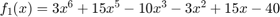
and
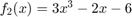
we have to zero pad the second polynomials as follows:
f_1 = [3 15 0 -10 -3 15 -40]; f_2 = [0 0 0 3 0 -2 -6 ]; %Note that f_2 has been zero padded to be the same length as f_1 f_3 = f_1+f_2 %
f_3 =
3 15 0 -7 -3 13 -46
Multiplication
Two functions can be multiplied in Matlab using the conv function. Let's multiply 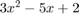 and 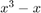. By hand we can use the distributive property of multiplication and come up with
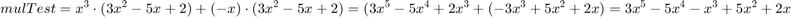
f1 = [0 3 -5 2] % What polynomial does this represent? f2 = [1 0 -1 0] % % f3 = conv(f1,f2); %
f1 =
0 3 -5 2
f2 =
1 0 -1 0
Polynomial Division
A polynomial can be divided by another polynomial with the MATLAB built-in function deconv, which has the form:
[q,r] = deconv(u,v)
q: quotient coefficients r: remainder coefficients u: numerator coefficients v: denominator coefficients
For example, perform the following division by hand:
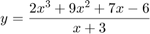
...and now check the results with Matlab
% Define the numerator and denominator
u = [2 9 7 6]
v = [1 3]
[q,r] = deconv(u,v)
u =
2 9 7 6
v =
1 3
q =
2 3 -2
r =
0 0 0 12
Derivatives of Polynomials
The built-in function polyder can be used to calculate the derivative of a single polynomial, a product of two polynomials, or a quotient of two polynomials, as shown in the following three commands.
k = polyder (p)
Derivative of a single polynomial. p is a vector with the coefficients of the polynomial. k is a vector with the coefficients of the polynomial that is the derivative.
k = polyder (a, b)
Derivative of a product of two polynomials. a and b are vectors with the coefficients of the polynomials that are multiplied. k is a vector with the coefficients of the polynomial that is the derivative of the product.
[n d] = polyder(u,v)
Derivative of a quotient of two polynomials. u and v are vectors with the coefficients of the numerator and denominator polynomials. n and d are vectors with the coefficients of the numerator and denominator polynomials in the quotient that is the derivative.
The only difference between the last two commands is the number of output arguments. With two output arguments MATLAB calculates the derivative of the quotient of two polynomials.
Example Problems
1, 4, 9, 13, 15, 16